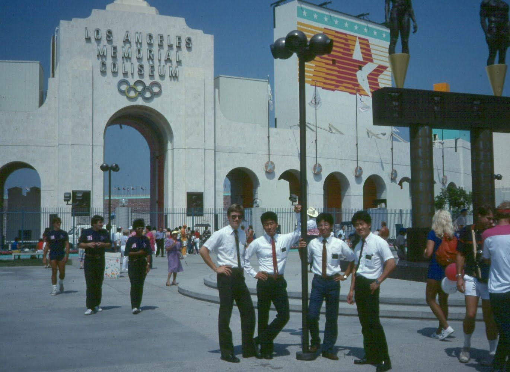

Made an appointment to trim the hair for the upcoming visit to 가주(加州)1 나성(羅城)2.
The hairdresser asked why we are travelling
“To celebrate our years together”
When I told her how long we have been together, she seemed surprised.
No words, but expressing with her expression – a long time to be together.
For me and Sister K, those years went by much too quickly.
There are memories that both of us recall equally well.
Then there are those that are selectively recalled by only one of us.
However, as we discussed past events and visit places, we seemed to.
Each time we hear our favorite song The memories come along
- Graeham George Goble, Little River Band
Made plans to visit the place where we spent our early 20s.
Where we both served under President Harold3 (Virginia) Hoopes and Clarence4 (Elna) Campbell.
Sister K learning English as she taught people in the Whittier, Hollywood, and Long Beach area.
I was re-learning 한국어 (韓国語), to be a proficient missionary in the LA Koreatown.
Over the years KPVU has expanded from a single gate facility to multiple gate regional airport.
With regular service to Orange County Airport (KSNA) and other West Coast destinations.
We were one of the first at the gate for an early morning flight. (As we get older, we are becoming more and more like our parents)
Had abbreviated sleep, due to anticipation of visiting the mission area. Planned a lunch and dinner meeting with a mission companion and a fellow language district missionaries.
There were some anxiety since it has been many decades since we had lived, ate and worked together.
- would they recognize me?
- what would we talk about?
- will they remember mistakes of a young missionary?
As I peeled out of Airport Way, I passed another car, driven by a hesitant driver. Sister K commented.
taking the local driving like a duck to water
If felt wonderful to be back in the area of my early young adult years – with my eternal companion at my side.
Celebrating our years together, that began…
그대 고운 목소리에 내 마음 흔들리고 나도 모르게 어느새 사랑하게 되었네
(Your soft, tender voice touched my soul and shook my world.
Without effort and as if destined, we become friends and lovers.)
Meeting with my old friends were like the one in Genesis 33.
Between Esau and Jacob.
No lengthy discussion about the past.
None of the short comings of young missionaries were discussed.
Just confirming and reaffirming that we were once young and we labored in innocence – with love.
We also talked about families.
The young ones we raised, the elderly one that raised us. Also talked about how to work with and work for the future generations.
As we visited, families members stayed and made efforts to get to know us.
My worries were erased and the years and decades of toils and worries vanished and we felt hopeful for ourselves and future generations

As we returned home, Sister K and I agreed that this was one of the best vacations of our lives.
We also reminded ourselves that,
I said to myself when we’re old We’ll go dancing in the dark Walking through the park and reminiscing
Reminiscing
by Graeham George Goble of Little River Band
Friday night, it was late, I was walking you home We got down to the gate and I was dreaming of the night
Would it turn out right How to tell you girl I want to build my world around you Tell you that it’s true I want to make you understand I’m talkin’ about a lifetime plan That’s the way it began, we were hand in hand Glenn Miller’s Band was better than before We yelled and screamed for more And the Porter tunes (Night and Day)
Made us dance across the room It ended all too soon And on the way back home I promised you’d never be alone
Hurry, don’t be late, I can hardly wait I said to myself when we’re old We’ll go dancing in the dark Walking through the park and reminiscing
사랑하는 이에게
정태춘 박은옥
그대 고운 목소리에 내 마음 흔들리고 나도 모르게 어느새 사랑하게 되었네
깊은 밤에도 잠 못 들고 그대 모습만 떠올라 사랑은 이렇게 말없이 와서 내 온 마음을 사로잡네
음 달빛 밝은 밤이면 음 그리움도 깊어 어이 홀로 새울까 견디기 힘든 이 밤
그대 오소서 이 밤길로 달빛 아래 고요히 떨리는 내 손을 잡아주오 내 더운 가슴 안아 주오
Google Translation
My heart sways at your beautiful voice I fell in love without even realizing it
Even in the deep night, I can’t sleep, and only your image comes to mind Love comes silently like this and captures my whole heart
Um, on a moonlit night Um, the longing deepens
Why should I stay up all night alone, this night is hard to bear Come, you, on this night road, quietly under the moonlight
Take my trembling hand, embrace my warm heart Here is the English translation of the song:
Open AI
To the One I Love by Jeong Tae-chun and Park Eun-ok
Your beautiful voice stirs my heart,
And without even realizing it, I have come to love you.
Even in the deep night, I cannot sleep, only your image comes to mind.
Love comes silently like this, and takes over my entire heart.
Hmm, on nights when the moonlight is bright,
Hmm, the longing deepens.
How can I spend the night alone? This unbearable night.
Come to me, down this moonlit path, quietly.
Hold my trembling hand, embrace my warm heart.
This song expresses deep love and longing, beautifully portraying the emotions of being in love under the serene light of the moon.